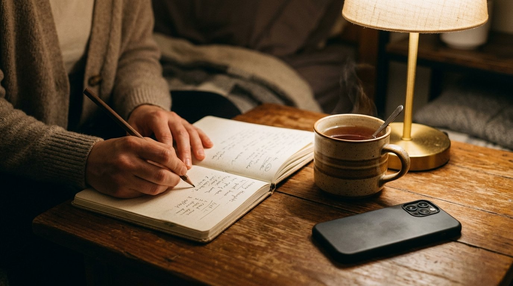

La niebla mental al caer la tarde: el protocolo de descarga nocturna para vaciar la cabeza en papel
Cuando las obligaciones se amontonan al final de la jornada, no necesitas pensar más ni con mayor rapidez. Necesitas un soporte físico con bordes reales donde volcar el peso antes de que la noche te devore.

Son las ocho y media de la tarde. Cierras la tapa del portátil o sales por la puerta de la oficina. En teoría, tu jornada ha terminado. En la práctica, tu cabeza sigue zumbando como un transformador eléctrico al límite de su capacidad.
Sientes ese peso característico en el entrecejo, los hombros rígidos y la mirada vidriosa: la clásica niebla mental de fin de día. Te sientas en el sofá con la intención ingenua de «descansar diez minutos» y cometes el mayor error que puede cometer un cerebro exhausto: sacas el teléfono del bolsillo y empiezas a deslizar el pulgar.
Tres vídeos de quince segundos, un titular alarmista sobre la economía, dos mensajes de WhatsApp que dejas a medias y una foto de las vacaciones ajenas. Quince minutos después no estás descansado: estás anestesiado, desorientado y con una punzada de culpa.
Tu mente intenta procesar todo a la vez y empieza el asalto nocturno: ¿le contesté a David con el tono correcto?, ¿qué hago si el cliente cancela la reunión?, ¿por qué siento que hoy no he hecho nada útil si no he parado ni a respirar?
El secuestro de la memoria RAM cerebral
Ese alboroto en bucle no es debilidad de voluntad ni falta de disciplina: es pura saturación neurobiológica.
A lo largo del día, tu corteza prefrontal ha tomado cientos de microdecisiones: qué contestar, qué ignorar, qué pestaña cerrar, qué urgencia apagar primero. A las nueve de la noche, su depósito de glucosa y neurotransmisores está en reserva roja. Pero hay algo peor: la psicología lo bautizó como el efecto Zeigarnik.
Tu cerebro detesta las historias sin rematar. Si dejas diez asuntos abiertos en el aire, tu mente no los aparca: los mantiene girando en segundo plano, exactamente igual que un ordenador portátil que se calienta y agota su batería porque tiene cincuenta aplicaciones en suspensión.
Cuando te metes en la cama con esa carga flotando en el vacío, el insomnio no es una sorpresa: es una consecuencia matemática.
El papel como perímetro de seguridad
Para calmar la tormenta, cerrar los ojos a la fuerza no funciona. El cerebro saturado no entiende el comando «deja de pensar». Lo que necesita con urgencia es un canal de drenaje físico y tangible.
Una pantalla digital no tiene fin. No tiene márgenes, no tiene fondo y siempre ofrece otro scroll infinito. Te invita a seguir buscando respuestas donde solo hay más preguntas.
El papel, en cambio, tiene límites sagrados. Tiene cuatro bordes físicos: arriba, abajo, izquierda y derecha. Lo que cabe en la página, cabe en la noche; lo que no cabe, simplemente se queda fuera hasta mañana. El papel no emite luz azul, no te envía una notificación mientras estás pensando y no te juzga.

El protocolo de descarga de las 21:00: Cuatro pasos limpios
No necesitas encender velas aromáticas ni sentarte en posición de loto durante cuarenta minutos. Solo necesitas un cuaderno de notas sencillo, un lápiz y diez minutos de honestidad antes de que la noche te atrape:
Paso 1: El volcado en bruto sin filtro moral
Abre una página en blanco y vomita en tinta todo lo que tienes dentro. Sin cuidar la caligrafía, sin gramática y sin censura: los correos sin mandar, el enfado con un compañero, el miedo a no llegar a fin de mes. Si está en el papel, ya no necesita estar consumiendo memoria de trabajo en tu cabeza.
Paso 2: La navaja de dos columnas (Hechos vs. Películas)
Traza una raya vertical en el centro. A la izquierda escribe los hechos objetivos (lo que realmente ha ocurrido y se puede comprobar con una cámara). A la derecha, anota las películas mentales (los «seguro que piensa que...», los «¿y si todo sale mal?»). Verás con tus propios ojos que más del ochenta por ciento de tu angustia no son problemas reales, sino ficciones que tú mismo estás inventando.
Paso 3: Un solo primer paso para la mañana
No intentes diseñar el plan de los próximos cinco años en mitad de la noche. El sobrepensamiento busca la solución perfecta; el papel solo necesita el paso siguiente. Elige una sola cosa concreta para mañana a primera hora (un mensaje que enviar, un número al que llamar o un borrador que revisar). Al igual que vimos al explicar cómo desarmar la parálisis por análisis, la claridad nunca llega antes de actuar; llega mientras caminas.
Paso 4: El chasquido del cierre físico
Deja el lápiz encima de la mesa. Cierra la tapa del cuaderno con un gesto firme. Ese sonido seco es la frontera oficial entre el día y la noche: el día ha terminado y tus asuntos quedan bajo custodia física en esa mesa. Pon el teléfono boca abajo en otra habitación o en la mesilla sin sonido. Ya te has vaciado.
El descanso es un acto de soberanía
Vivimos en una cultura que premia la disponibilidad constante y confunde estar permanentemente alerta con ser productivo. Pero la lucidez no nace del agotamiento crónico: nace de saber trazar un perímetro entre lo que te pertenece a ti y lo que le pertenece al mundo exterior.
Esta noche, cuando sientas que la niebla mental amenaza con atraparte, no busques el consuelo rápido de una pantalla brillante. Abre una libreta, apoya la mina del lápiz sobre la textura áspera del papel y regálate diez minutos de silencio. Tu cerebro te lo agradecerá al despertar.
¿Te cuesta desenredar los nudos mentales en una página en blanco?
Si la rumiación nocturna te bloquea y necesitas plantillas guiadas con preguntas precisas para separar los hechos reales del miedo imaginado, descubre el cuaderno guiado Deja de darle mil vueltas.